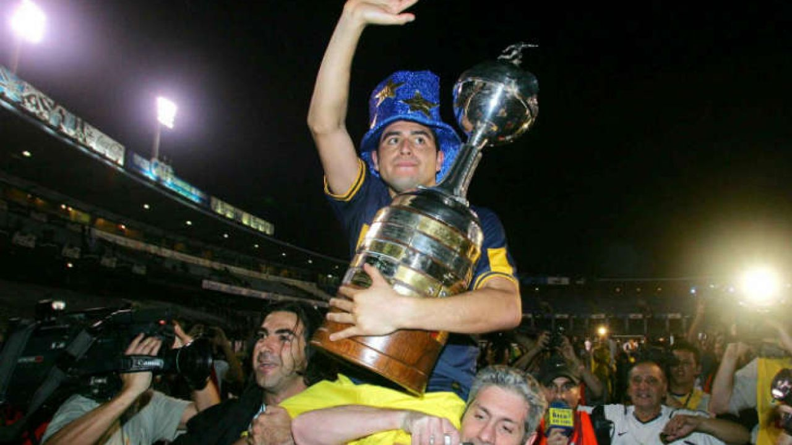

Sumando torneos nacionales e internacionales, es el club más exitoso
y con mayor cantidad de títulos en la historia del fútbol argentino: 74 títulos
oficiales, lo cual lo convierte en el club más campeón del país. A su vez,
es uno de los equipos más exitosos en el profesionalismo, y también del amateurismo,
solamente superado en esta era por el extinto Alumni y Racing Club. Inclusive, es el
único club del país en haber logrado al menos un título por década y uno de los dos
equipos argentinos (junto con Racing) que más veces salió campeón de forma invicta:
5 (en 1919, 1924, 1926, 1998 y 2011). Al mismo tiempo, fue el segundo club argentino
(por detrás de Racing) en alzarse con cuatro títulos oficiales en un solo año, al
proclamarse campeón de la Primera División de Argentina, Copa Dr. Carlos Ibarguren,
Copa de Competencia Jockey Club y la Cup Tie Competition, todos en el año 1919 (primeros
cuatro campeonatos obtenidos en la historia del club).
Es uno de los seis equipos argentinos y uno de los 31 equipos del mundo que
ostentan el título de campeón mundial de clubes entre más de 300 000 clubes
reconocidos por FIFA, al haber conquistado la Copa Intercontinental en los años
1977, 2000 y 2003, derrotando a los representantes de la Copa de Campeones de
Europa: Borussia Mönchengladbach de Alemania, Real Madrid de España y Milan de
Italia, respectivamente.

- 35 Copas de Liga
- 5 Supercopa Argentina
- 6 Copas Libertadores
- 3 Copas Intercontinental/Mundial
- 4 Recopas Internacionales
- 1 Supercopa Sudamericana
- 6 Copas Argentina
- 6 Copa de honor/ Competencia
- 6 Copa Master / Interamericana